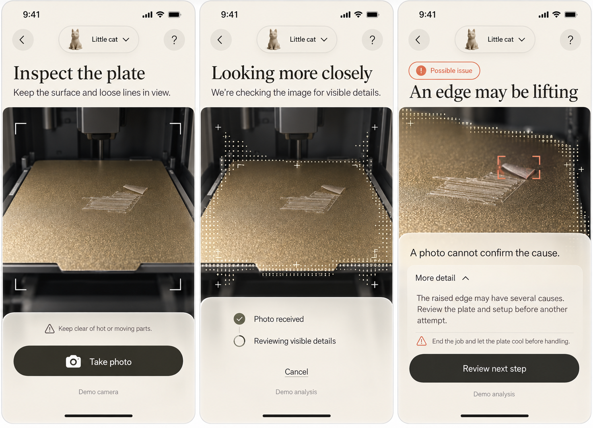

Warm glass. Precise image detail.
A new direction using only your two latest images and video: ivory frosted surfaces, charcoal actions, open typography and a fine matrix effect localized to inspection imagery.

Previous mockups and visual references were excluded. App code remains unchanged while this direction is under review.
Refinements and reference use
- Claryx contributes silhouette-following dots; the ASCII flower contributes precise local character contours; the video contributes olive/amber atmosphere and changing dot density.
- The photo remains readable. Decorative scan effects should be optional and identified; they do not indicate verified measurements.
- Headings are broader but more prominent than the target. Tune their size on a real phone viewport. Use “Less detail” for the expanded row and omit an unnecessary project dropdown.
Twelve sampled video frames · Provenance · App source verification